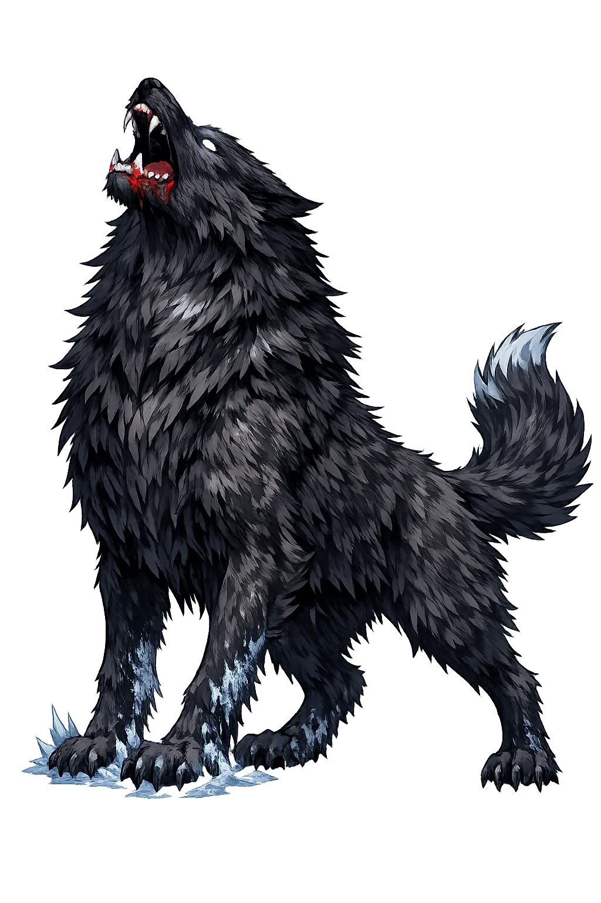
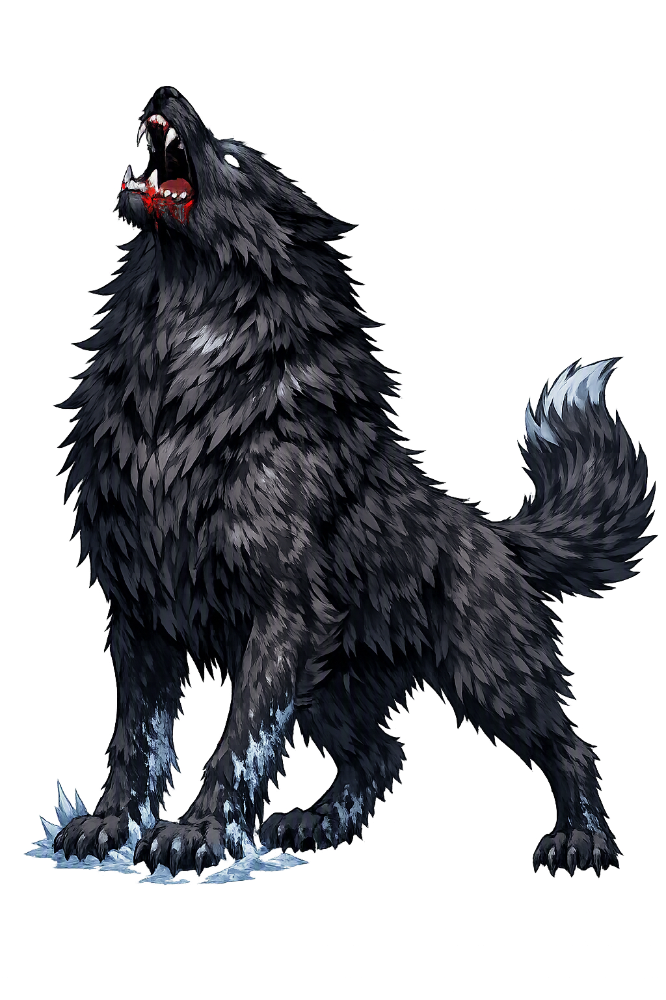

Unicode restoration and ASCII comparison
ᚼᛅᛏᛁ
The name in its original Norse form. Hati (ᚼᛅᛏᛁ) is attested in the source tradition — “The hater”. Its original diacritics and script distinctions carry the full phonetic and orthographic weight of the source tradition.
hati
The plain hati form is identical to the Unicode restoration. Because this name is already written in Latin letters, no diacritics, stress, or script information were lost — only capitalization differs.
Hati
The Unicode restoration does not need to recover lost marks for Hati. Its value is canonical spelling and consistent cataloguing, not the reconstruction of erased orthography. The domain is readable as-is to both DNS and humanity.
Hati.com → hati.com
The non-ASCII characters in Hati are encoded while the ASCII remains visible. To the DNS, it is Punycode. To humanity, it is Hati.
How Hati travels from ancient script to the modern URL
Owned, ideal, and ASCII forms of Hati
Hati
Restores ᚼᛅᛏᛁ. The full Unicode restoration. hati.com is not in the PuniCodex collection — it is watched for release; if it drops, this temple upgrades to an owned flagship.
How Hati was spoken
The Hater, the Fame-Wolf's Son, and the Darkening of Heaven
Hati Hróðvitnisson is the wolf who runs before the sun and after the moon: son of the fame-wolf Fenrir, bred in the Ironwood, and fated to seize Máni out of the sky — the chase on which the Edda hangs its explanation of the darkened moon and one of the certainties of Ragnarǫk.
Grímnismál's picture: Hati runs before the bright bride of heaven — ahead of the sun, at the heels of the moon that flees before her.
The patronymic names his father: Hróðvitnir, 'fame-wolf', a heiti of Fenrir himself — the apocalyptic kennel's own lineage.
Völuspá's forest east of the world, where the old giantess breeds Fenrir's brood — and from them all comes the one who takes the moon.
The catch Snorri says must come: the moon swallowed, the sky spattered with blood, and the light of the world going out at Ragnarǫk.
Stories of Hati
Hati's mythology is a single image carried by a handful of verses: a wolf, a moon, and a chase that ends only with the world. The Poetic Edda names him once, Snorri gives him his quarry and his ending, and Völuspá's seeress supplies the brood he springs from.
The name's one poetic attestation comes in Óðinn's great catalogue of the cosmos in Grímnismál, where the disguised god enumerates the heavens for the torture-bound Geirrøðr: 'Skǫll is the name of the wolf who follows the bright-faced god to the sheltering wood; but the other is Hati, Hróðvitnir's son, who runs before the bright bride of heaven.' The bright bride of heaven is the sun; the wolf who runs before her is on the heels of the moon, which travels ahead of her. In four lines the Edda converts the machinery of the sky into a hunt: what astronomy calls a course, the poem calls a chase.
Snorri systematizes the verse. When Gangleri asks why the sun hurries so — 'she speeds as if she were afraid' — High One answers that she has good cause: 'the one who seeks her is right behind her, and she has no other way out than to run.' Two wolves do the work of the heavens: Skǫll chases the sun and will catch her, and 'the other wolf is called Hati Hróðvitnisson; he runs in front of her and wants to catch the moon — and that is what will happen.' Snorri's gloss fixes the reading the poem left compressed, and with it the moon's doom is put on the schedule of things foretold.
In the same chapter Snorri names the mightiest of the wolf-brood: Mánagarmr, 'moon-hound' — 'he will be filled with the flesh of all who die, and he will swallow the moon and spatter the sky and all the air with blood; from this the sun will lose its brightness.' Whether Mánagarmr is Hati under a second name or a third wolf beside the pair, the manuscripts and the handbooks leave open; Simek and Lindow record the identification as probable but unprovable. What is certain is the image: the moon taken, and the blood of the swallowed light staining heaven.
Völuspá's seeress supplies the kennel. 'In the east sat the old one in the Ironwood and bred there Fenrir's brood; from all of them comes one in particular, a snatcher of the moon in a troll's skin. He gorges on the life of doomed men, reddens the gods' dwellings with red blood; the sunshine turns black in the summers after, and all weathers run hostile.' The poem names no name — but the tungls tjúgari, the 'snatcher of the moon', is the role Grímnismál and Snorri assign to Hati, and the handbooks read the figures together: the Ironwood breeds the chase, and the chase ends the world.
The ending is shared by every witness. When Ragnarǫk comes, the wolves' running stops: Skǫll takes the sun, Hati takes the moon, Fenrir himself swallows Óðinn, and 'the sun turns black, earth sinks into the sea, the bright stars vanish from the sky.' The Edda's cosmology is built so that the nightly order of the heavens is only an interval — the long meanwhile between the start of the chase and its foreknown end. Hati never fails of his quarry; he simply has not caught it yet.
Hati is the Edda's most economical idea: take the verb 'to hate', give it legs, and set it running after the light. There is no malice-scene, no dialogue, no character beyond the name — only pursuit. And that is the point. The Norse imagination looked at the most orderly thing in the world, the clockwork of sun and moon, and read it as flight: the lights hurry because something hates them and is coming. Time itself becomes the distance still left between the wolf and the moon — every night the moon escapes is a night the world continues. Hati asks the uncomfortable question the whole Ragnarǫk cycle asks: how do you keep the light moving, knowing exactly what follows it? The Edda's answer is the one it gives everywhere. You keep running. The chase is the world.
Enter Extended Lore